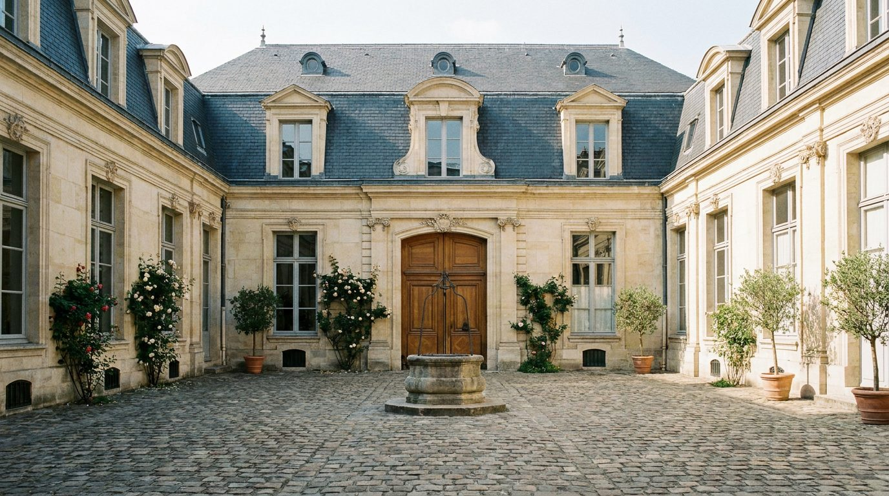
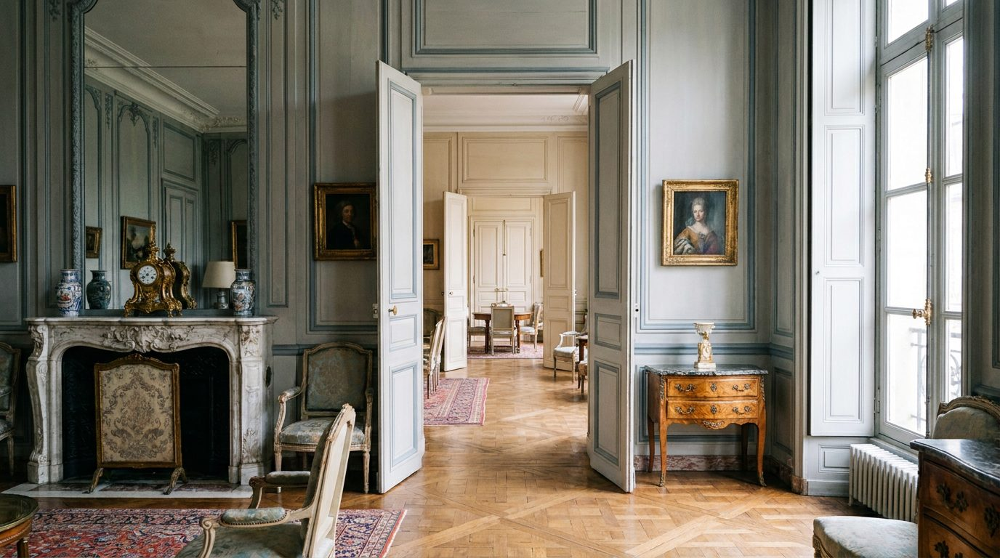

Atlante · FR-03 · Francia · Île-de-France
Hôtel particulier nel Marais (cortile + enfilade)
Esempi · esterno e interno


Perché funziona
dà una sequenza narrativa (cour pavée → hall → enfilade) utilissima a un catalogo che deve mostrare più ambienti dello stesso "immobile".
Architettura · elementi riproducibili
- Cortile lastricato in pietra, facciata in pietra da taglio, portone a due battenti 3–4 m
- Scalone d'onore con ringhiera in ferro battuto, gradini in pietra, HSP del vano 6–8 m
- Enfilade di 3–5 stanze in asse, porte tutte aperte, pavimento continuo
- Boiserie XVII–XVIII, camino in pietra o marmo, travi a vista nei piani alti
Luce
luce di cortile riflessa, alta e morbida; interno in penombra con pozze di luce sulle soglie; 5000–5500 K.
Prompt di generazione (EN)
Interior of a 17th-century Parisian hôtel particulier: enfilade of three rooms seen through open double doors, pale limestone walls, dark oak parquet, carved stone fireplace, tall French windows onto a paved courtyard, muted green velvet bench. Cool reflected courtyard light entering from the far end, bright thresholds against soft shadowed rooms, 5000 K. 24 mm lens, f/5.6, camera at 1.3 m, strict axial perspective, natural colour, no people, 3:2.
Errori tipici da controllareprospettiva non assiale che rompe l'enfilade; altezze dei vani incoerenti tra una stanza e l'altra; cortile visibile solo come sfondo piatto.